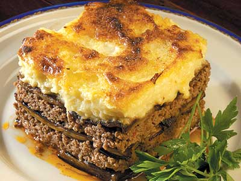

Ovengerecht uit Griekenland. Je kunt veel van de Grieken beweren behalve dat ze geen mooie gerechten hebben.
De oven voorverwarmen op 200 graden. De courgettes en aubergines wassen, in plakken snijden (in de lengte) en met wat zout bestrooien. De aardappelen schillen en in plakjes snijden en frituren in de frituurpan. De plakjes aubergine en courgette in de zonnebloemolie bakken in een koekenpan. Daarna op keukenpapier leggen, zodat het vet eruit trekt. De ui fruiten in olijfolie en dan het gehakt toevoegen en rul bakken. Daarna de wijn, pommodore, de peterselie, peper en zout toevoegen. Tien minuten laten smoren. De bechamelsaus maken: Laat de boter met een half theelepeltje zout en peper smelten, het meel toevoegen onder goed roeren met een garde, als dit een glad papje is, in één keer de 2 liter melk erbij gieten en heel goed blijven roeren tot het kookt, dan de pan van het vuur nemen en de eieren en de geraspte kaas erbij doen, dit goed door elkaar roeren met een garde. Een flinke ovenschaal invetten met boter en op de bodem naast elkaar de plakjes aardappel leggen. Hierop wat van de geraspte kaas strooien en een laag courgettes erbovenop. Nu de helft van het gehakt erover verdelen en weer wat geraspte kaas. Weer een laagje aardappelen, kaas, de aubergines en de andere helft van het gehakt in de ovenschaal doen. Weer wat geraspte kaas. De bechamel saus op dit geheel schenken en hierover wat geraspte kaas strooien. De schaal in het midden van de oven zetten. Na ongeveer een half uur is de Mousaka klaar, als de bovenkant een beetje bruin is geworden. Eet smakelijk; " kali orexi"
Meer over het echte Griekenland weten? Ga naar de Griekse Gids
copyright VOF de Griekse Gids - Wendy Nikolidakis